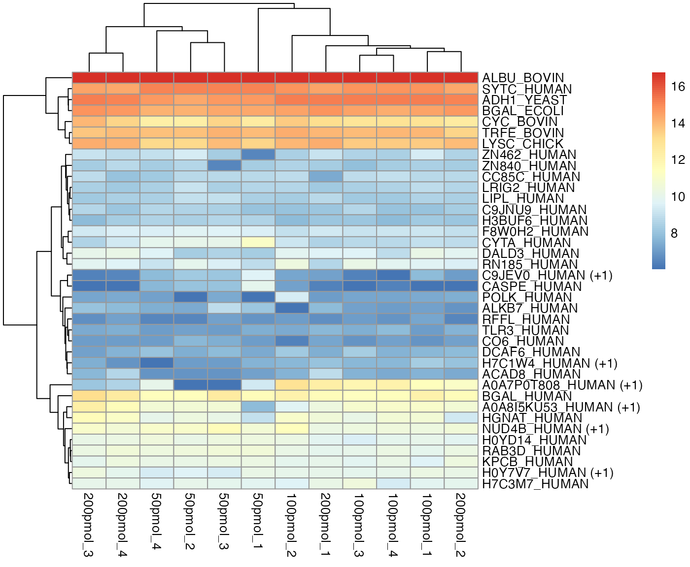
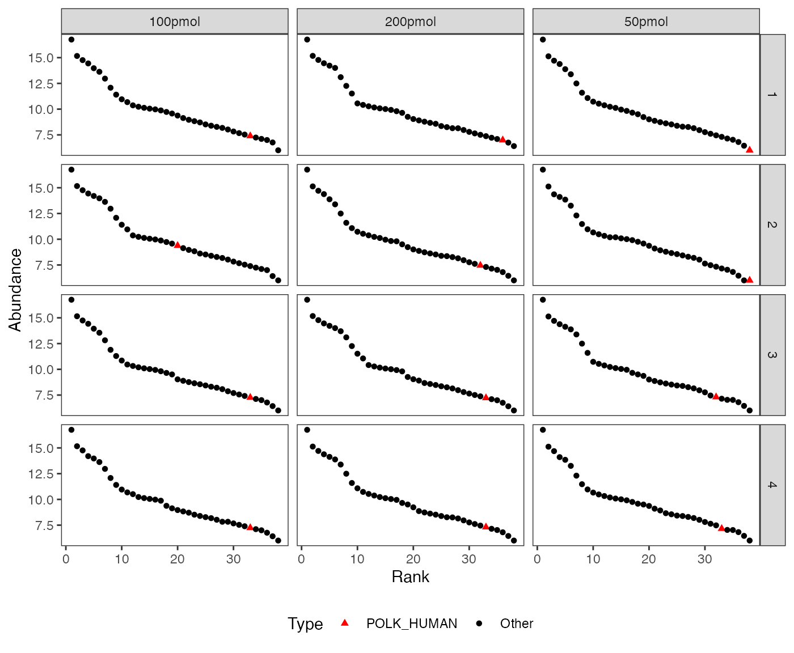
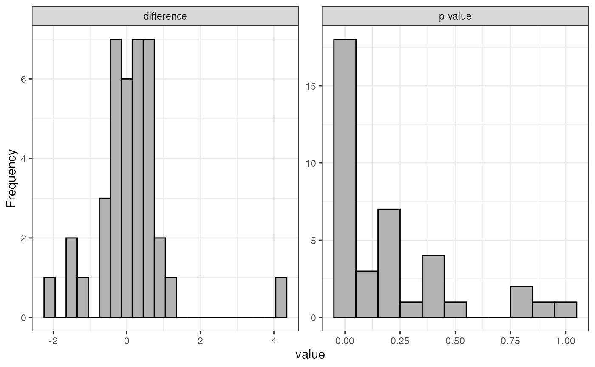
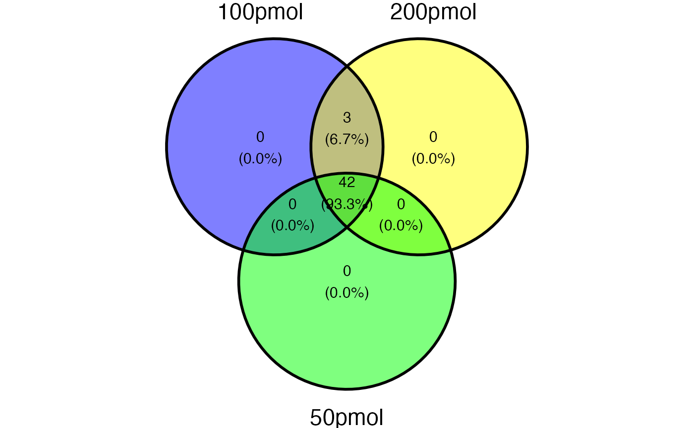
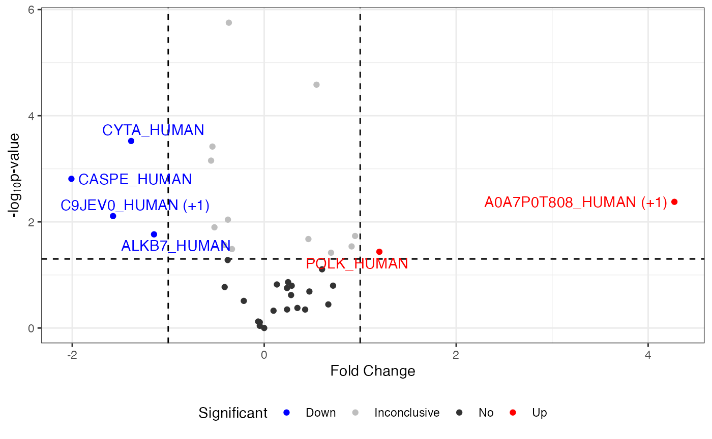
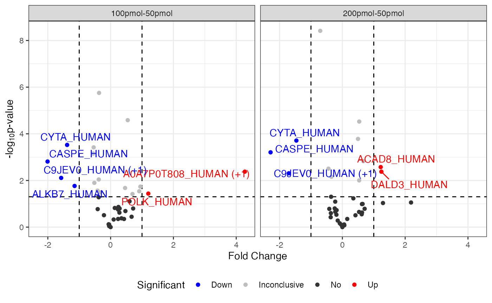
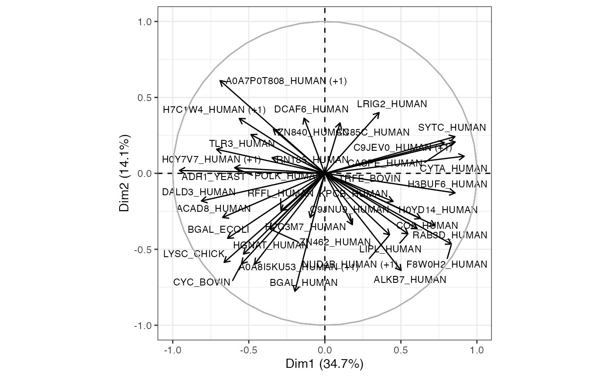
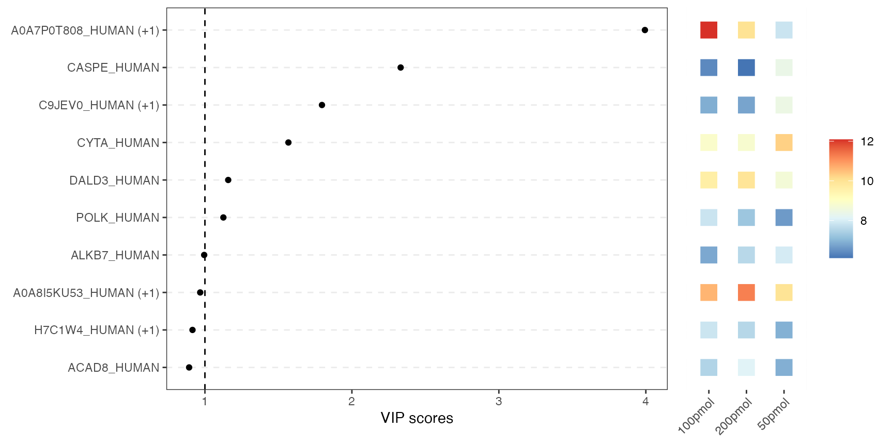

Visualization
Shiying Xiao, Charles Watt, Jennifer C. Liddle, Jeremy L. Balsbaugh, Timothy E. Moore
Department
of Statistics, UConn
Proteomics
and Metabolomics Facility, UConn
Statistical
Consulting Services, UConn
2026-02-11
Source:vignettes/visualization.Rmd
visualization.RmdThis module provides a variety of options for getting a global view of your data, making comparisons, and highlighting trends.
There is a wide variety of plotting options in msDiaLogue. What plots are possible depend on what data you have and what analyses have been run. See below for more details of individual plot types.
Preliminary
## load R package
library(msDiaLogue)
## preprocessing
fileName <- "../inst/extdata/Toy_Spectronaut_Data.csv"
dataSet <- preprocessing(fileName,
filterNaN = TRUE, filterUnique = 2,
replaceBlank = TRUE, saveRm = TRUE)
## transformation
dataTran <- transform(dataSet, logFold = 2)
## normalization
dataNorm <- normalize(dataTran, normalizeType = "quant")
## filtering
dataImput_pre <- filterNA(dataNorm, minProp = 0.51, by = "cond", saveRm = TRUE)
## imputation
dataImput <- impute.min_local(dataImput_pre)
## analysis: MA
anlys_ma <- analyze.ma(dataImput, ref = "50pmol")
## analysis: Empirical Bayes moderated t-test
anlys_modt <- analyze.mod_t(dataImput, ref = "50pmol", adjust.method = "none")
## analysis: PCA
names(dataImput)[sapply(dataImput, function(col) length(unique(col)) == 1)]
dataPCA <- dataImput[, colnames(dataImput) != "ALBU_BOVIN"]
anlys_pca <- analyze.pca(dataPCA, center = TRUE, scale = TRUE)
## analysis: PLS-DA
anlys_plsda <- analyze.plsda(dataImput, method = "kernelpls",
center = TRUE, scale = FALSE)Boxplot
visualize.boxplot(dataNorm)
#> Warning: Removed 55 rows containing non-finite outside the scale range
#> (`stat_boxplot()`).Distributions plot
To examine whether missing values are biased towards lower-abundance proteins, the distribution plot helps clearly distinguish proteins with and without missing values.
visualize.dist(dataTran)
In the left panel, the Missing group is concentrated in the low-abundance range, showing a sharper peak than the Valid group, whose distribution is flatter and more diffuse. This indicates that proteins with missing values generally have lower abundance—a typical pattern in proteomics and metabolomics, where low-abundance signals are more prone to missingness (MNAR).
In the right panel, the ECDF reveals the same pattern: the Missing group rises more quickly and reaches high cumulative probability at lower abundance levels, confirming that its average-abundance distribution is left-shifted relative to the Valid group.
If the input is a list of data frames (e.g., before and after imputation), density plots are arranged side by side to enable direct comparison of distributional changes.
visualize.dist(list("Pre-Imputation" = dataNorm, "Post-Imputation" = dataImput))Heatmap
The package offers two options for plotting the heatmap, regardless of whether missing values exist.
- Option 1 utilizes the source package
pheatmap, capable of plotting the dendrogram simultaneously. It is the default choice for heatmaps in this package.
visualize.heatmap(dataImput, pkg = "pheatmap",
cluster_cols = TRUE, cluster_rows = TRUE,
show_colnames = TRUE, show_rownames = TRUE)
#> Warning: Setting row names on a tibble is deprecated.When protein names are excessively long, it is recommended to set
show_rownames = FALSE to view the full heatmap.
If the input data contains an NA value, the heatmap will be binary for missing data patterns, i.e., whether values are present or absent.
visualize.heatmap(dataSet, pkg = "pheatmap",
cluster_cols = FALSE, cluster_rows = FALSE,
show_colnames = TRUE, show_rownames = TRUE,
show_pct_cols = FALSE, show_pct_rows = TRUE,
show_pct_legend = TRUE, saveRes = TRUE)- Option 2 use the source package
ggplot2to generate a ggplot object but does not include the dendrogram.
visualize.heatmap(dataImput, pkg = "ggplot2")
#> Warning: Setting row names on a tibble is deprecated.
In a heatmap, similar colors within a row indicate relatively consistent values, suggesting similar protein expression levels across different samples.
visualize.heatmap(dataSet, pkg = "ggplot2",
show_pct_cols = FALSE, show_pct_rows = TRUE,
show_pct_legend = TRUE, saveRes = TRUE)
MA plot
Examples
visualize.ma(anlys_ma$`100pmol-50pmol`, M.thres = 1)
#> Warning: Removed 32 rows containing missing values or values outside the scale range
#> (`geom_text_repel()`).where M.thres = 1 means the M thresholds are set to -1
and 1. The scatters are split into three parts: up regulation (M >
1), no regulation (-1
M
1), and down regulation (M < -1). Additionally, the warning message
“Removed 32 rows containing missing values” indicates that there are 32
proteins with no regulation.
If the input dataSet is the whole list
anlys_MA, msDiaLogue will produce
individual subplots corresponding to each comparison.
visualize.ma(anlys_ma, M.thres = 1)
#> Warning: Removed 63 rows containing missing values or values outside the scale range
#> (`geom_text_repel()`).
Details
An MA plot visualizes the differences between measurements taken in two samples, by transforming the data onto M (log ratio or fold change) and A (mean average) scales. The MA plot puts the variable M on the y-axis and A on the x-axis and gives a quick overview of the distribution of the data. Most proteins are expected to show little variation, and so the majority of the points will be concentrated around the M = 0 line (no difference between group means). Typically, points falling above are highlighted.
An MA plot, short for “M vs. A plot,” which uses two axes:
- M axis (vertical): Represents the fold change, usually on the logarithm base 2 scale, or the ratio of the expression levels, between two conditions. It is calculated as:
- A axis (horizontal): Represents the average intensity of the two conditions, calculated as:
Most proteins are expected to exhibit little variation, leading to the majority of points concentrating around the line M = 0 (indicating no difference between group means).
Rank abundance distribution plot (Whittaker plot)
The rank abundance plot shows proteins ranked by abundance to visualize distribution patterns and highlight specific proteins across conditions or replicates.
visualize.rank(dataImput, listName = "POLK_HUMAN",
facet = c("Replicate", "Condition"))
Histogram of fold changes and p-values for test
Examples
visualize.test(anlys_modt$`100pmol-50pmol`)
If the input dataSet is the whole list
anlys_modt, msDiaLogue will produce
individual subplots corresponding to each comparison.
visualize.test(anlys_modt)
Details
The function visualize().test can be applied to any test
output. It generates two useful plots: a histogram of fold changes
across the analyzed proteins and a histogram of p-values. The majority
of proteins are expected to show very small change between conditions,
so the fold change histogram will have a peak at around zero. For the
p-values, most p-values are expected to be non-significant (above 0.05).
Depending on the strength of the treatment effect, there may be a peak
of p-values near 0.
UpSet plot
The UpSet plot is a visual representation that helps display the overlap and intersection of sets or categories in a dataset. It is particularly useful for illustrating the presence or absence of elements in combinations of sets.
visualize.upset(dataSet)This plot reveals that 42 proteins are shared by 50pmol, 100pmol, and 200pmol, while only 3 proteins are shared by 100 pmol and 200pmol, but not with 50pmol.
Venn plot
The Venn plot is another graphical representation of the relationships between sets. Each circle represents a set, and the overlapping regions show the elements that are shared between sets.
visualize.venn(dataSet, show_percentage = TRUE,
fill_color = c("blue", "yellow", "green", "red"),
saveRes = TRUE)
where saveRes = TRUE refers to the data containing
logical columns representing sets in Venn plot information will be saved
as a .csv file named venn_information.csv in the current
working directory.
In the example above, 50pmol, 100pmol, and 200pmol groups share 42 proteins. Notably, 3 proteins are exclusively found in the 100pmol and 200pmol groups.
Volcano plot
Examples
visualize.volcano(anlys_modt$`100pmol-50pmol`, P.thres = 0.05, F.thres = 1)
#> Warning: Removed 32 rows containing missing values or values outside the scale range
#> (`geom_text_repel()`).
If the input dataSet is the whole list
anlys_modt, msDiaLogue will produce
individual subplots corresponding to each comparison.
visualize.volcano(anlys_modt, P.thres = 0.05, F.thres = 1)
#> Warning: Removed 65 rows containing missing values or values outside the scale range
#> (`geom_text_repel()`).Details
A volcano plot is a graphical representation commonly used in proteomics and genomics to visualize differential expression analysis results. It is particularly useful for identifying significant changes in extensive data. It displays two important pieces of information about differences between conditions in a dataset:
Statistical significance (vertical): Represents the negative log10 of the p-value.
Fold change (horizontal): Represents the fold change.
Scree plot
One way to help identify how many PCs to retain is to explore a scree plot. The scree plot shows the percentage of variance explained by each PC.
visualize.scree(anlys_pca, type = c("bar", "line"),
bar.color = "gray", bar.fill = "gray", line.color = "black",
label = TRUE, ncp = 10)
where label = TRUE adds information labels at the top of
bars/points, and ncp = 10 sets the number of dimension to
be displayed.
Score plot / graph of individuals

Details
The primary PCA plot of individual data visually represents the distribution of individual observations in a reduced-dimensional space, typically defined by the PCs. The x and y axes of the PCA plot represent the PCs. Each axis corresponds to a linear combination of the original variables. Individual data points on the PCA plot represent observations (e.g., samples) from the original dataset. Points that are close to the origin (0, 0), are close to the “average” across all protein abundances. If sufficient samples are present, the plot will also produce a 95% confidence ellipse, as well as a centroid (mean for each group provided), for each groups (condition) provided.
Loading plot / graph of variables

Details
This plot will be more useful if your analyses are based on a relatively small number of proteins. It represents the association, or loading of each protein on the first two PCs. Longer arrows represents stronger associations.
Biplot of score (individuals) and loading (variables)
The biplot includes individual and variable plots. Again, with a large number of proteins, this plot can be unwieldy.
visualize.biplot(anlys_pca, ellipse = TRUE, ellipse.level = 0.95, label = "all")
VIP score plot
This combined plot pairs a VIP-score chart on the left with a heatmap on the right. The left panel shows each variable as a dot at its VIP score from PLS-DA. Higher scores indicate greater importance for class separation. The right panel uses colored tiles to show each top variable’s average abundance across conditions. So you can instantly see which variables matter most for class separation and how they behave in each condition.
visualize.vip(anlys_plsda, comp = 1, num = 10, thres = 1)